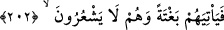
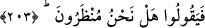
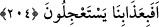
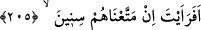

fayda etmediği bir vakitte kendilerini ona îmana mecbur eden “acıklı azâbı görünceye
kadar ona iman etmezler.”
202. İşte bu (azap) onlara, kendileri farkında olmadan, ansızın geliverecektir.
“İşte bu” azab “onlara, kendileri farkında olmadan,” geldiğini fark etmeden, azâbın
gelme vaktini bilmeden dünyada ve âhirette “ansızın geliverecektir.”
203. O zaman: “Bize (iman etmemiz için) mühlet verilir mi aceba?”
diyeceklerdir.
“O zaman:” îmanı ellerinden kaçırdıklarına pişmanlık duyarak ve hatâlarını telafi
etmek üzere mühlet verilmesi temennisinde bulunarak “Bize” îman ve tasdik etmemiz
için “mühlet verilir mi aceba?” diyeceklerdir.”
204. (Durmadan mucize talebiyle) onlar bizim azâbımızı mı çarçabuk istiyorlar?
Rasûlullah (s.a.) onları azabla tehdid edince, “Ne zamana kadar bizi azabla tehdid
edeceksin? Bu azab ne zaman?” dediler. Bunun üzerine bu âyet nâzil oldu.
“Onlar bizim azâbımızı mı çarçabuk istiyorlar?” Bazen: “Gökten üzerimize taş
yağdır.”, bazen de: “Tehdid ettiğin azâbı bize getir.” dediler. Azab indiği zamanki
halleri ise sadece mühlet ve zaman istemek oldu.
Acıklı azab indiği zaman onların hali zikredildiği gibi mühlet istemek olur ve
azâbımızı acele isterler. Bu iki şey arasında zıtlık olduğu ise kimseye gizli değildir.
et-Te’vîlâtü’n-Necmiyye’de der ki: “Onların azâbı acele istemeleri, bizim azâbımızın
neticelerindendir. Eğer azab görenlerden olmasalardı, azab talebinde acele etmezlerdi.”
205. Ne dersin! Eğer biz onları yıllarca yaşatsak.
Bu âyet, onların yukarıdaki “Bize mühlet verilir mi aceba?” (203. âyet) sözlerinin
bir sonucudur ve ona bağlıdır. Aradaki cümle (204. âyet) azarlama (tevbih) için olan